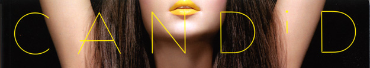
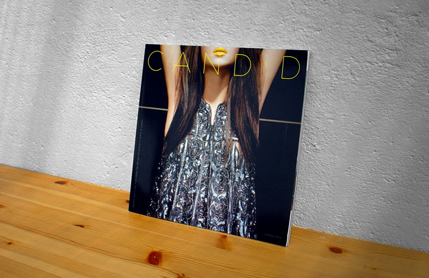
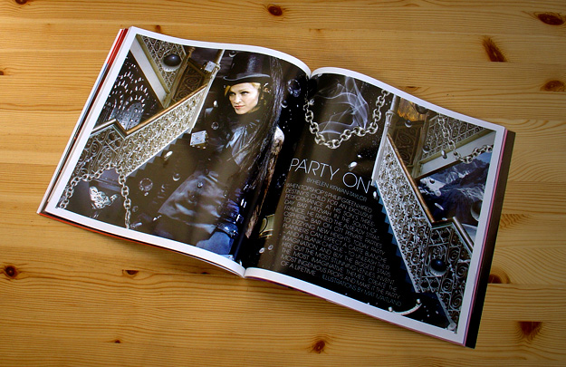
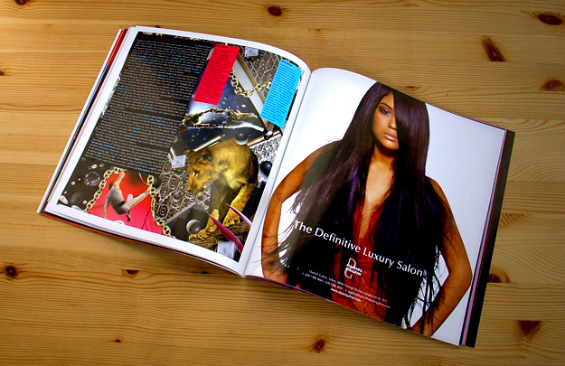
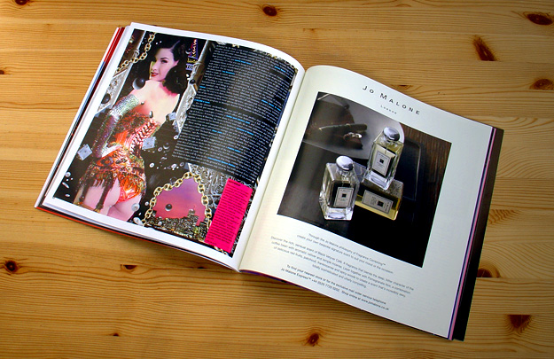
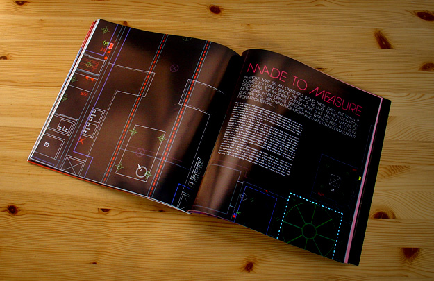
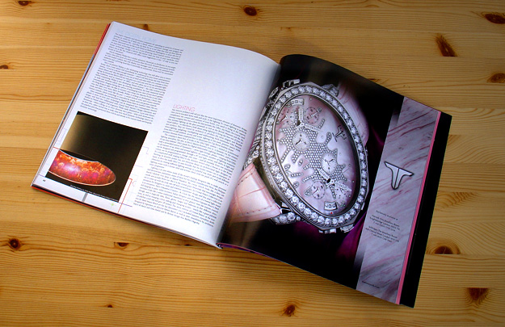
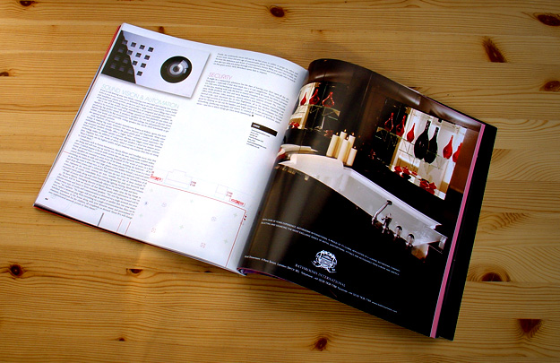

Candid Magazine
Logo art work and editorial designs
Creative director: Stefano Arata; Art editor: Jay Hess; Co-designers: Dominic Clifford, Kaoru Sato
'Party On' illustration by Mat Maitland
Luxury Publishing | 2006